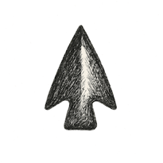

30 Justice Before Judgement

Chapter 30
Living Inside Fair Systems
“Justice delayed is justice denied.”
— commonly attributed to William E. Gladstone
The room was too clean for what it had done.
That was my first objection.
Not legal. Not procedural. Not admissible anywhere, except perhaps in the court of an old man’s suspicious nervous system. But I have learned to trust small objections. A room that has harmed someone should at least have the decency to look like it has been in a fight. Scuffed floor. Bad lighting. A water stain shaped like institutional regret. Something.
This room had none of that.
It was bright, quiet, and curved in all the modern ways that suggest the architect had once read a study about stress reduction and then attacked every corner in the building. The chairs were comfortable. The table was round. The walls were warm. A live plant stood in the corner, performing the role once assigned to marble lions: reassuring visitors that power had taste.
It was called a civic appeals space.
Not a courtroom.
Not a tribunal.
Not a customer-support center, thank God, because no society should invite justice and customer support to share vocabulary unless it has given up on both.
The woman across the table was named Mara. Not the Mara from earlier chapters, though by now the book had collected enough Maras, Ryans, elders, engineers, and stewards that one could be forgiven for suspecting civilization was being run by a rotating repertory cast. This Mara was in her late forties, perhaps early fifties, with the stillness of someone who had already explained herself too many times and had begun conserving motion.
She had been denied a care subsidy.
That phrase sounds small until one has met the life attached to it. A subsidy is not a poem. It is hours of help, medication routing, a respite worker, a safe shower, a modified doorway, a daughter’s ability to sleep, a son’s ability to keep his job, a body’s ability to remain at home without turning family love into unpaid infrastructure with tears.
The system had denied her because it believed she was already covered by another jurisdiction.
The other jurisdiction believed she had moved out of eligibility.
The care mesh believed the provincial credential had priority.
The provincial credential believed the municipal record was stale.
The municipal record believed the national identity update had transferred her file.
The national identity update believed a machine-audited residency signal had resolved the conflict.
The machine-audited residency signal had been inferred from utility usage, care-routing location, and a temporary stay with her sister after surgery.
Every system had passed its local check.
Together, they had created an impossible person.
On the transparent screen between us, the decision path glowed like a branching river.
Municipal credential: green check.
Provincial eligibility: green check.
Care mesh routing: green check.
Residency update: green check.
Machine audit: green check.
Risk of duplicate benefit: green check.
Automated denial: green check.
Appeal route: pending.
Green everywhere.
That was the second objection.
A system should not be allowed to use that much green while a human being is trapped inside it.
The mediator sat beside the display. Human, trained, augmented, and visibly tired in the way good mediators become tired: not from boredom, but from carrying other people’s almost-justifiable certainties until the room can put them down. An AI evidence assistant occupied a side screen, its role carefully bounded. It could summarize, trace, flag contradictions, and suggest missing evidence. It could not decide. It could not speak without being invited. It could not say “therefore” in a tone of authority, which is a feature more systems should adopt.
Mara looked at the screen.
“I understand why it happened,” she said.
The mediator nodded.
“I don’t need the system to explain why it trapped me. I need it to let me out.”
No one spoke for a moment.
That sentence did more legal work than the interface.
The evidence assistant displayed a quiet prompt:
Potential global failure despite local compliance.
A beautiful phrase, if one enjoys watching language put on a lab coat to avoid saying we hurt someone while following the rules.
The mediator turned to Mara.
“We can initiate an emergency eligibility bridge while the jurisdictional conflict is corrected.”
Mara’s face did not change.
“How long?”
“Within forty-eight hours.”
“How long to correct the records?”
The mediator glanced at the evidence assistant.
The screen offered a range.
Estimated correction time: 12–31 days.
Mara laughed once.
Not because anything was funny.
A laugh like a door closing.
“My mother needs help bathing tomorrow.”
There it was.
The human unit of time.
Tomorrow.
Systems enjoy days, weeks, service levels, windows, escalation tiers, and estimated resolution ranges. Bodies have tomorrow. Care has tonight. Hunger has lunch. Pain has now. Justice that cannot understand time becomes procedure with a corpse somewhere downstream.
The mediator caught it.
“Then the bridge begins today,” she said.
The evidence assistant flagged a policy exception.
The mediator overrode it.
The room did not explode.
This seemed promising.
I watched the decision chain change. A temporary eligibility bridge opened. Records were marked disputed. Jurisdictional review triggered. Duplicate-benefit prevention suspended under emergency care clause. Human review assigned. Timeline set. Harm report opened. Pattern check initiated for similar cases.
For the first time, the screen showed yellow.
Good.
Yellow is an honest color.
Mara leaned back, not relieved exactly, but less held by the throat.
I kept looking at the green checks.
The system had not been cruel.
That was the point.
Cruel systems are easier to accuse. This one had been calm, compliant, traceable, efficient, and wrong. No villain. No sneer. No judge banging a gavel. No bureaucrat saying no with personal satisfaction. Only rules, credentials, models, jurisdictions, handoffs, and a woman who became impossible because the systems around her were individually correct and collectively stupid.
Justice in the machine age will often begin there.
Not with evil.
With a clean chain of green checks ending in a wrong life.
The Future Judges in Interfaces
The old world liked to imagine justice as a moment after wrongdoing.
Crime.
Charge.
Trial.
Verdict.
Punishment or acquittal.
Perhaps appeal, if one had money, stamina, evidence, and enough life left to wait.
That model still matters. There will still be crimes, courts, victims, accused persons, evidence, judges, punishment, acquittal, and the difficult necessity of deciding what a society does when harm has already entered the room and taken off its coat.
But in a systems world, judgment often begins earlier.
It begins when a category is assigned.
When the model infers.
When the form rejects.
When the credential fails.
When the dashboard flags.
When the gate closes.
When the risk score narrows the path.
When the person becomes legible in the wrong way.
The future will not only judge people in courtrooms.
It will judge them in interfaces.
Eligibility screens. Care triage. Insurance classifications. School placements. Employment filters. border checks. civic-role access. housing systems. fraud detection. automated moderation. mobility permissions. machine-tax assessments. public-risk dashboards. community trust systems. data-trust access. production-cell certifications.
Most of these decisions will not look like judgment.
That is why they are dangerous.
They will look like administration.
Routing.
Screening.
Protection.
Optimization.
Eligibility.
Risk management.
Fraud prevention.
Operational efficiency.
Each may be necessary. A society without screening, routing, fraud control, and risk management becomes a buffet for abuse, chaos, and those who have learned to monetize sympathy. But a society that lets these decisions behave like judgments without due process becomes unjust before the law even arrives.
Justice before judgment means designing systems so they do not produce unfairness first and ask courts to mop later.
This is the inversion.
Old justice: after harm, assign blame.
Refactored justice: upstream fairness, contestable decisions, proportional response, repair, and prevention without pre-crime tyranny.
Not judgment abolished.
Judgment made accountable before it becomes fate.
[THREE-EMPIRE TIMELINE SECTION TO BE INSERTED IN LATER HISTORICAL-SPINE PASS: Empire of Ideology / Empire of Institution / Empire of Speed.]
[SEGUE FROM TIMELINE INTO DESIGN ARGUMENT TO BE DRAFTED AFTER FINAL TIMELINE ALIGNMENT.]
The Illusion of Neutral Systems
Systems often claim neutrality because they follow rules.
This is adorable in the way a vending machine is adorable until it eats your money and insists, by silence, that justice has been served.
A rule-following system is not automatically neutral. A data-driven system is not automatically neutral. A procedural system is not automatically neutral. A model that produces the same output from the same input is not neutral if the input, categories, history, threshold, error tolerance, or remedy has already been bent.
Neutrality is often bias that has learned paperwork.
Every system embeds choices:
What categories exist.
What evidence counts.
Who must prove.
Who gets believed.
What uncertainty is tolerated.
What errors are acceptable.
Who pays for delay.
Who can appeal.
What harm is visible.
What history is ignored.
Who can navigate the interface.
Who has time to contest.
Who is presumed honest.
Who is presumed risky.
In Mara’s case, the system had chosen duplicate-benefit prevention as a higher initial priority than continuity of care. That is a value choice. It may be reasonable in many cases. Fraud matters. Public resources are not infinite. But when the anti-duplication mechanism creates an impossible person, the system must know how to bend toward care before procedure becomes injury.
Neutral systems often hide moral choices behind technical language.
Threshold.
Eligibility.
Confidence.
Risk.
Exception.
Insufficient documentation.
Out of jurisdiction.
Manual review required.
Identity mismatch.
No active coverage.
These phrases may be useful. They may also be small doors closing.
The first act of justice is to notice where the door is.
Judgment Before Judgment
The first verdict is often the category.
This is one of the hardest facts of modern life.
Before any court appears, a person may already be treated as eligible or ineligible, safe or risky, resident or non-resident, compliant or noncompliant, credible or suspect, stable or unstable, employable or filtered out, covered or uncovered, real or unverified, normal or edge case.
Categories do necessary work.
Without them, systems cannot act. A hospital must triage. A school must place students. A public benefit program must determine eligibility. A safety system must identify risk. A tax system must classify activity. A care mesh must decide urgency. A court must distinguish witness, defendant, victim, claimant, expert, and officer of the court.
But categories are judgments wearing simple clothes.
Eligibility screening. Risk scoring. Identity verification. Credit decisions. School placement. Triage. Predictive policing. Automated moderation. Insurance classification. Employment filters. Border screening. Civic trust scoring. Fraud detection. Care access.
Each may decide before anyone says “decision.”
The danger grows when categories become sticky.
Temporary becomes permanent.
Risk becomes identity.
Need becomes stigma.
A missing credential becomes distrust.
A forged record becomes public belief.
A model’s uncertainty becomes someone’s narrowed life.
A humane system must therefore ask:
What categories exist?
Who created them?
Who is harmed by them?
Can they be contested?
Do they expire?
Do they carry uncertainty?
Do they trigger proportional actions?
Can the person add context?
Can a human see the mismatch between category and life?
The first verdict is often the category.
Justice begins by making categories answerable.
Fairness Before Outcome
A system that produces a fair-looking average while crushing outliers is not fair.
It is tidy.
Tidy is not justice.
Fairness must begin upstream: before outcome, before appeal, before the harmed person is told that exceptions happen and the office appreciates their patience.
Are the categories fair?
Is the data representative?
Are proxies valid?
Is there hidden historical bias?
Are edge cases protected?
Are affected people consulted?
Are error rates visible?
Does the system know whom it harms?
Can the system stop itself?
This is where design inversion matters. Justice is not merely the institution at the end of harm. Justice is the discipline built into the conditions that create decisions.
Instead of asking only, “Was the final decision correct?” ask:
Was the path to the decision fair?
Was the person seen accurately enough?
Were the rules built around normal cases while pretending edge cases were rare?
Did the system protect against its own confidence?
Could the person interrupt the process?
Could harm pause the machine?
Fairness is not a decorative outcome.
It is an upstream architecture of humility.
Evidence Provenance
Evidence without provenance is rumor wearing a suit.
In the Hall of Mirrors, this matters more than ever.
A justice system cannot survive if evidence becomes merely whatever looks convincing at the moment of decision. Video can be forged. Audio can be synthesized. Records can be altered. Sensor data can be miscalibrated. Machine logs can be incomplete. Witnesses can be sincere and wrong. Models can generate “evidence-like” outputs whose relation to reality is more decorative than causal.
Evidence is not a thing.
It is a journey.
Source.
Timestamp.
Custody.
Transformations.
Synthetic or altered detection.
Uncertainty.
Witness context.
Sensor reliability.
Model-generated inference.
Adversarial manipulation.
Audit logs.
A clean clip with no chain of custody may be weaker than a messy witness statement with strong corroboration. A sensor reading without calibration history may be less reliable than local knowledge that caught the anomaly first. A model output may be useful as signal but dangerous as proof. A public record may be official and outdated. A private record may be accurate and illegally obtained.
Justice needs evidence paths, not evidence surfaces.
This does not mean drowning every dispute in forensic ritual. A scratched bicycle does not require a national evidence grid. But the higher the stakes, the more provenance matters.
In systems that can judge before judgment, evidence must carry its history.
Otherwise the person is not judged by reality.
They are judged by whatever reality-looking object arrived first.
Due Process as Interface
Due process should not be a legal abstraction admired from a distance like a mountain no one has time to climb.
It is an interface.
A person must know:
What decision was made.
Why.
By whom or what.
Based on what evidence.
What rules applied.
What can be challenged.
How to appeal.
How long it takes.
What happens during appeal.
Who can help.
Due process that cannot be navigated by the person it governs is theater.
This is one of modern civilization’s recurring embarrassments: we can make buying shoes easier than appealing a decision about one’s life.
The shoe interface says: size, color, delivery, return.
The justice interface says: consult regulation 14B, subsection iii, unless your jurisdiction has adopted the amended schedule, in which case submit Form 19-C through the portal, except when the portal rejects your identity credential, in which case call the office during the hours you are at work.
Then it calls itself fair because the process exists.
No.
A process that exists only for the literate, wealthy, legally trained, digitally fluent, emotionally rested, and administratively stubborn is not due process. It is an obstacle course wearing a blindfold.
A fair interface must be legible, accessible, translated, disability-aware, trauma-aware, time-bounded, and supported.
It must tell the person what is happening without requiring them to become a procedural archaeologist.
A humane system should not need the person to suffer heroically before it becomes just.
Recourse as Right
A system without recourse turns mistakes into weather.
You can complain about weather. You can prepare for weather. You can write poetry about weather. You generally cannot appeal weather.
Systems should not be allowed to act like weather when they harm people.
Recourse must be a right.
Appeal.
Correction.
Annotation.
Review.
Reversal.
Compensation.
Apology.
Restoration.
Human hearing.
Emergency suspension.
External escalation.
Record repair.
Pattern review.
Not all errors require the same recourse. A minor scheduling mistake does not need a tribunal. A wrong benefits denial, an unsafe risk classification, a forged evidence event, a machine-caused injury, a care-routing failure, or a tax assessment that ruins a small operator requires stronger paths.
Recourse must match consequence.
And recourse must be able to pause harm. An appeal after the eviction, denial, exclusion, exposure, or care failure may be morally insufficient even if procedurally correct. The system must know when to hold, bridge, suspend, or provide provisional support while truth is sorted.
Mara’s emergency eligibility bridge mattered because it recognized time.
Justice that arrives after the body has fallen is not justice delayed.
It is justice changing the subject.
Proportionality
Proportionality is justice’s sense of scale.
Without it, systems become absurd and cruel at the same time, which is one of bureaucracy’s special talents.
A civilization that swats every fly with artillery will eventually run out of windows.
Proportionality asks:
How severe is the possible harm?
How certain is the evidence?
Is the action reversible?
What rights are affected?
How vulnerable is the person?
What historical bias might be involved?
Is there a less restrictive alternative?
How urgent is the decision?
Is the action preventive or punitive?
The less certain the system is, the more reversible its action should be.
That rule alone could prevent many civic disasters.
If evidence is weak, do not impose irreversible harm.
If risk is uncertain, offer support before punishment.
If identity is mismatched, bridge before denying.
If a person is temporarily vulnerable, do not create permanent stigma.
If noncompliance is minor, do not trigger cascading penalties.
If a model is probabilistic, do not treat its output as fate.
Proportionality is not softness.
It is disciplined strength.
The ability to match response to reality is one of civilization’s highest forms of intelligence.
Prevention Without Pre-Crime
Justice before judgment must not become pre-crime.
This distinction is sacred enough to deserve guards.
A humane society should prevent harm where possible. It should not wait passively for abuse, violence, neglect, fraud, infrastructure failure, environmental hazard, or institutional cruelty to complete themselves before acting. Waiting for harm can be a form of complicity wearing procedural purity.
Good prevention changes conditions before judging persons.
It reduces coercive conditions.
Mediates conflict.
Improves mental health access.
Detects unsafe infrastructure.
Reduces environmental hazards.
Supports families.
Interrupts abuse.
De-escalates violence.
Redesigns incentives.
Repairs systems that generate harm.
Bad prevention punishes probability.
Restricts rights based on opaque risk.
Assigns guilt to patterns.
Polices identity.
Treats refusal as risk.
Turns models into oracles.
Narrows life chances quietly.
A risk score should never become a shadow sentence.
A prediction should never become a verdict.
The design inversion here is crucial:
Do not prevent harm by pre-punishing the person.
Prevent harm by changing the field in which harm becomes likely.
Fix the bridge.
Support the family.
Reduce the incentive.
Add the human review.
Delay the irreversible action.
Open the care path.
Mediate the conflict.
Remove the dangerous design.
Systems that cannot tell prevention from pre-punishment should not be trusted with prediction.
Restorative and Reparative Pathways
Justice must include repair.
Not only punishment.
Not only procedure.
Not only compensation calculated by someone whose spreadsheet has never sat with shame.
Repair.
Restitution.
Mediation.
Apology.
Community repair.
Treatment.
Reintegration.
Institutional correction.
Structural repair.
Public record correction.
Truth processes.
Old words return here: atonement and mercy.
Atonement, refactored, is not metaphysical cleansing. It is making repair real.
Mercy is not arbitrary leniency. It is restrained power that preserves dignity without erasing accountability.
Restorative pathways are not always appropriate. Let us avoid sentimental overreach. Some harms require removal, constraint, punishment, or protection from further harm. Victims should not be conscripted into forgiveness because the system enjoys moral theater. Communities should not be asked to absorb danger in the name of healing.
But punishment-only justice fails too. It often satisfies the system more than the harmed person. It may produce spectacle while leaving causes intact. It may isolate the wrongdoer without repairing the wound. It may teach fear but not responsibility.
A humane justice system asks:
What would make the harmed person whole enough?
What would make recurrence less likely?
What does accountability require?
What does safety require?
What can be repaired?
What cannot?
What truth must be spoken?
What record must change?
What pattern produced this harm?
Repair is not softness.
Repair is labor.
Punishment can be easier. It lets the system say the matter is closed.
Repair asks whether anything was actually healed.
Systems That Admit Error
Institutions often treat error as liability, humiliation, or threat.
So they hide it.
Minimize it.
Rename it.
Proceduralize it.
Move it into passive voice.
“Mistakes were made,” says the institution, as if mistakes had slipped into the building under their own power and started approving budgets.
Humane systems must treat error as feedback.
Not all errors are equal. Honest mistakes differ from negligence. Negligence differs from malice. Malice differs from system design that predictably harms while everyone politely calls it unintended.
A just system must distinguish them.
Incident reporting.
Error budgets.
Public correction protocols.
Non-punitive reporting for honest mistakes.
Accountability for negligence.
Learning loops.
Independent review.
Model performance audits.
Near-miss reporting.
Redress funds.
A just system does not claim never to be wrong.
It proves that wrongness has somewhere to go.
This is one of the deepest marks of legitimacy. Not perfection. Corrigibility.
The institution that can say, “We were wrong, here is why, here is who was harmed, here is what we changed, here is what we owe,” becomes more trustworthy than the institution that insists error never happens while citizens quietly build folklore around its failures.
Error hidden becomes rot.
Error handled becomes learning.
Justice Across Blurred Jurisdictions
The Erased Perimeter creates jurisdictional fog.
Harm may cross provinces, countries, platforms, meshes, machine systems, corporate entities, Indigenous lands, ecological commons, and data trusts before anyone can locate a responsible desk.
If authority crosses borders, recourse must cross with it.
A machine actor registered in one jurisdiction may harm infrastructure in another.
A care decision may route through provincial, municipal, and private systems.
A data trust may affect a community outside the legal domicile of the company using the data.
A freight corridor may create local burden while corporate benefit accrues elsewhere.
A forged record may travel across platforms before local harm appears.
Old justice often depends on jurisdictional clarity.
The new world offers jurisdictional stew.
So justice needs routing protocols: jurisdiction mapping, rights floors, cross-mesh dispute resolution, mutual recognition of due process, conflict-of-law protocols, portable recourse, ombuds networks, public-interest arbitration, and respect for Indigenous and treaty jurisdictions not as “stakeholders,” but as sources of law and standing.
Otherwise, harmed people are sent from office to office while systems explain that each part worked.
The future will not lack rules.
It will drown in rules unless justice can find the right door.
Resource Justice
Justice is not only interpersonal.
It is also about substrates.
Who owns resources?
Who bears extraction costs?
Who benefits?
Who decides?
Who has standing?
Who receives compensation?
Who inherits damage?
The 1951 echo belongs here: resource sovereignty, oil, blockade, law, power, extraction, and the question of whose lawful order counts when empires have lawyers. A legal system can call itself lawful while preserving extraction. Procedure can be immaculate and unjust. Contracts can be valid and violent in effect.
This matters in the AI-speed age because resources have multiplied in form.
Oil, water, land, minerals, data, compute, attention, genomes, public records, ecological capacity, trust.
Resource justice asks not only whether an individual was treated fairly inside a system, but whether the system’s control of the substrate is itself just.
A fair hearing inside an extractive order may still leave the order intact.
That is why justice must reach back into commons, value, governance, and making. Who controls the ground from which decisions are made? Who defines the categories? Who profits from the measurement? Who bears the externality? Who gets to appeal extraction before extraction becomes fact?
Justice before judgment includes justice before the resource is gone.
Justice for Machine-Caused Harm
Responsibility must not dissolve into automation.
When machine actors cause harm, who is responsible?
Developer?
Operator?
Owner?
Deploying institution?
Data provider?
Regulator?
Model auditor?
Local steward?
The answer may be several of them. That is acceptable if the chain is clear. It is intolerable if everyone points to the machine, and the machine, being a machine, points to nothing.
Machine-caused harm needs responsibility maps.
Design responsibility.
Deployment responsibility.
Operational responsibility.
Monitoring responsibility.
Data responsibility.
Maintenance responsibility.
Regulatory responsibility.
Incident response responsibility.
A machine actor registry can help, but registry alone is not justice. The harmed person needs a path. The system needs an address. The investigation needs logs. The remedy needs funding. The recurrence prevention needs authority.
“Autonomous” must not become the new “act of God,” a phrase historically useful to insurers, kings, and people who built houses in floodplains and then blamed theology.
If machines act in public life, humans and institutions remain answerable for the conditions of action.
Dignity Under Suspicion
A society obsessed with risk can treat people as suspects-in-waiting.
This may be one of the great moral dangers of predictive systems.
Risk matters. Fraud exists. Violence exists. Abuse exists. Infrastructure fails. People lie. Systems get gamed. A society that refuses to investigate becomes a playground for the predatory.
But investigation must not become humiliation by default.
Dignity under suspicion requires non-humiliating verification, presumption of humanity, trauma-aware process, privacy during investigation, clear time limits, no permanent suspicion trails, right to explanation, and closure.
A person should not be treated as guilty because the system is uncertain.
A person should not carry a permanent mark because of a temporary flag.
A person should not be forced to reveal a whole life to correct one suspicion.
A person should not have to perform innocence theatrically for a machine.
Innocence, refactored, is not the absence of risk score.
It is freedom from being treated as guilty before act, evidence, and fair process.
This matters especially for the poor, sick, displaced, young, old, disabled, undocumented, misdocumented, over-policed, and administratively unusual — in other words, for many of the people systems most often misread and least often believe.
Dignity under suspicion is not naiveté.
It is restraint.
Justice as Commons
Justice itself is a commons.
If courts, tribunals, mediation systems, appeals, public defenders, ombuds, legal aid, community repair processes, evidence standards, and dispute-resolution channels decay, the powerful buy justice and everyone else receives procedure.
Justice is not a service.
It is a shared load-bearing structure.
This is easy to forget because legal systems often feel like specialized institutions owned by professionals wearing complex language. But the health of justice determines whether contracts mean anything, rights mean anything, property means anything, bodily safety means anything, public authority means anything, and truth can still enter a room without being priced out of standing.
When justice decays, people do not stop seeking justice.
They seek it through vengeance, patronage, corruption, mob pressure, private security, platform outrage, tribal loyalty, or despair. None of these is an improvement, though several produce faster results and worse societies.
A justice commons requires funding, access, translation, public defenders, civic mediation, transparent procedures, evidence integrity, digital appeal tools, restorative pathways, and the capacity to confront power without needing to become powerful first.
It requires public trust.
It requires correction.
It requires memory.
It requires mercy.
It requires the humility to know that no system, however elegantly designed, should be trusted with irreversible power unless it has learned how to be wrong.
Build Systems That Can Admit Error
Back in the appeals room, Mara’s emergency bridge was approved.
The decision did not become poetry. It became care hours, a scheduler call, a record correction, and an exhausted woman who would not have to bathe her mother alone the next morning.
That is enough.
Justice often begins in such unglamorous units.
A corrected record.
A paused denial.
A human hearing.
A bridge payment.
An apology that does not sound like a press release hiding from a lawyer.
A system that says: wrongness has somewhere to go.
A humane future must build fairness upstream of judgment. In classification, evidence, access, process, recourse, proportionality, and repair. In systems that can admit error before error becomes someone’s biography.
The inversion is the chapter:
Justice is not the punishment after failure.
Justice is the architecture that makes failure visible, contestable, limited, repairable, and less likely to recur.
A fair system is not one that occasionally corrects injustice after damage.
A fair system is designed so error can be seen, contested, limited, and repaired before it becomes destiny.
Justice before judgment is a promise.
The next interlude must ask what protocols keep that promise when the system is tired, wrong, captured, rushed, frightened, or very pleased with its green checkmarks.